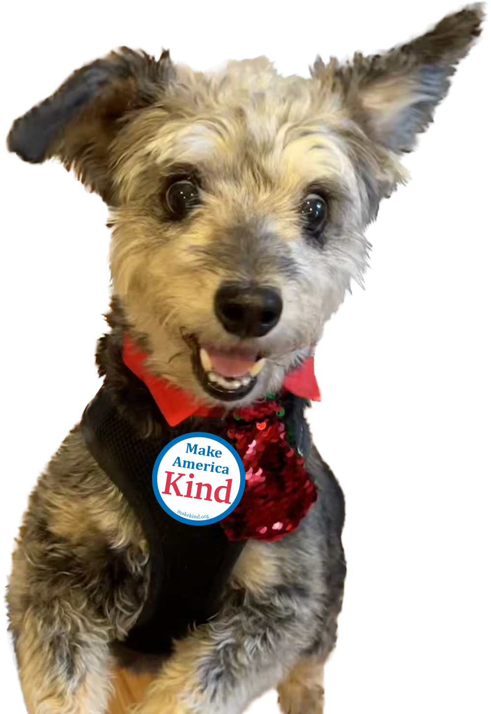

Make America
Kind.
One button at a time. Whatever your politics, we can all agree there's too much fear and anger going around — kindness is something everyone can wear.


Wear one · Share one
A labor of love, one conversation at a time
My name is Peter — a retired computer specialist. In 2017, I saw a sign at the original Women's March that gave me a real jolt of hope, and I wanted to carry a piece of that feeling with me. I went looking for a button and found one on Amazon for $8 — but I have a habit of losing buttons, so $8 felt steep for something I probably wouldn't hold onto for long.
Read the full story
So I taught myself Adobe Illustrator and designed a blue version myself. When I went looking for the cheapest way to actually produce it, I landed on purebuttons.com — and discovered, almost by accident, that 100 buttons from them cost less than 5 would have cost me on Amazon. So I ordered 100.
People kept asking where I got mine. I started handing over the one I was wearing on the spot, then started carrying extras just in case. Eventually I wanted to make it easy for other people to do the same thing, so I built a simple website: makekind.org. At first all I could offer was purebuttons' phone number and the details to read off — later, purebuttons added the ability to link directly to a specific design, which is what made a real ordering page possible. That's still how it works today: I upload each design to purebuttons.com and stickylife.com as a ready-to-go order, and when you click one on this site, you're picking up right where I left off — you just choose a quantity, pay, and they print and ship it straight to you.
My friend Jennifer, a graphics design professor, later developed a number of design options with her class, and they voted on their favorite — the rainbow design won, and she let me share it here too. At the suggestion of a Republican friend of mine, I designed the red version myself.
A number of people who liked the buttons told me they hadn't experienced America as being kind before, and asked if I'd remove "Again." In February 2020, I redesigned all the buttons to drop it — but then came requests to bring the original wording back, so I reintroduced MAKA too and let people choose. In June 2026, I introduced a new one: Make America Kind with Heart (MAKH), for the people I meet who want to carry a little extra warmth.
If you'd like to help make America kind, one button at a time, it takes about a minute to order. Pick the design you like, spread some kindness, and have fun with it.
— Peter
P.S. This site is a labor of love. I don't make a dime from it.
P.P.S. If you've been here before — welcome back. I gave the site a fresh coat of paint in 2026, but it's the same buttons, same mission, same me.
Three designs, nine years, one message
Peter starts wearing the original Make America Kind Again button — and gets asked about it constantly.
At supporters' request, Peter redesigns every button to drop "Again" — then brings the original wording back too, once people ask for it.
Make America Kind with Heart (MAKH) arrives, for the people Peter meets who want a little extra warmth.

Cody, Make America Kind's most enthusiastic supporter
Buttons look good on everyone
People, jackets, tote bags, the occasional dog harness — if you've got a photo of your button out in the world, I'd love to see it. Send it my way through the contact page.
Share your photoReady to wear one?
Buttons ship from purebuttons.com. Car magnets ship from stickylife.com. Both take just a few minutes to order.
Point a phone camera at this code
On an iPhone, open the Camera app, hold it steady over the code, and tap the banner that appears to open makekind.org.